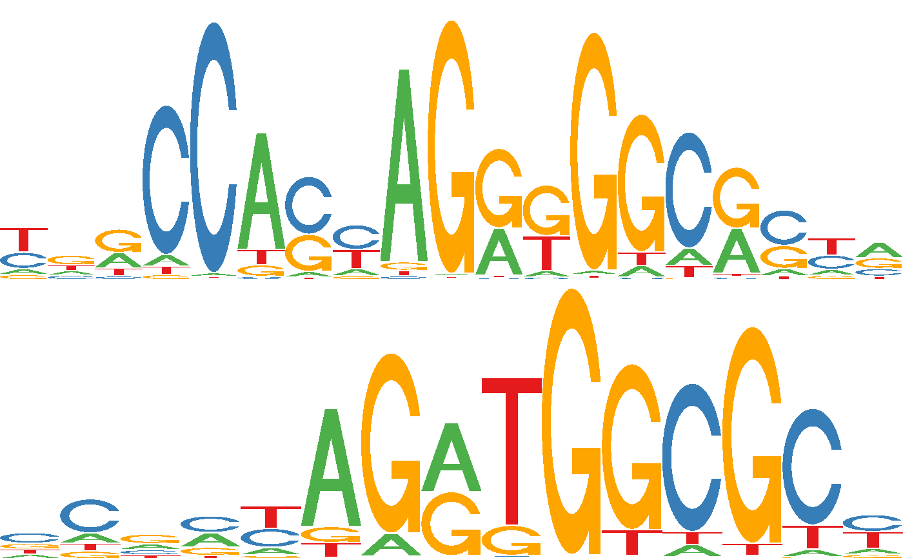

Create a simple sequence logo grob (grid-graphics object) for a
transcription factor from a position frequency matrix. The logo drawing
code is a simplified version from seqLogo and for
example can be used to embedd sequence logos within other plots.
Usage
seqLogoGrob(x, xmax = NULL, ymax = 2, xjust = c("left", "center", "right"))Arguments
- x
A
PFMatrixobject- xmax
A numeric scalar with the maximal width for the logo (in base-pairs). A value of
NULLwill scale the logo to the full width of the viewport.- ymax
A numeric scalar with the maximal height for the logo (in bits) A value of
NULLwill scale the logo to the full height of the viewport.- xjust
A character scalar specifying the horizontal adjustment of the sequence log withint the viewport; one of
"left","center"or"right".
See also
seqLogo for the original, more flexible
version of this function.
Examples
if (require(JASPAR2020) && require(TFBSTools) && require(gridExtra)) {
pfm1 <- getMatrixByID(JASPAR2020, "MA0139")
pfm2 <- getMatrixByID(JASPAR2020, "MA0531")
g1 <- seqLogoGrob(pfm1)
g2 <- seqLogoGrob(pfm2)
gridExtra::grid.arrange(g1, g2)
}
